Scarpa Connection Manager
Welcome to the official user guide for Scarpa Connection Manager. This application is designed to be your central hub for infrastructure access, allowing you to manage SSH, SFTP, Remote Desktop (RDP), and native Android Device Mirroring securely from a single, unified interface.
1. Managing Sessions
Keeping a large number of servers organized is critical. The application features a robust left-hand navigation tree that supports unlimited folder nesting. If you need to reorganize your connections, simply click and hold a session to drag and drop it into a different folder seamlessly.
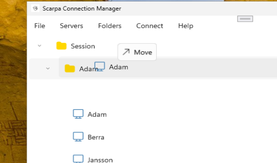
When you create a new connection or edit an existing one, you will start on the General tab. This tab holds the core routing and authentication parameters necessary to establish a connection:
- Display Name: A friendly name to easily identify the machine in your session tree.
- Host / IP & Port: The network address (either an IPv4 address or a fully qualified domain name) and the target port (defaulting to 22 for SSH).
- Folder: A dropdown to quickly reassign the session to an existing folder in your tree.
- Authentication: Choose between standard Password authentication or secure Key-based methods. The password field includes a convenient toggle to reveal the hidden characters to ensure accuracy before saving.
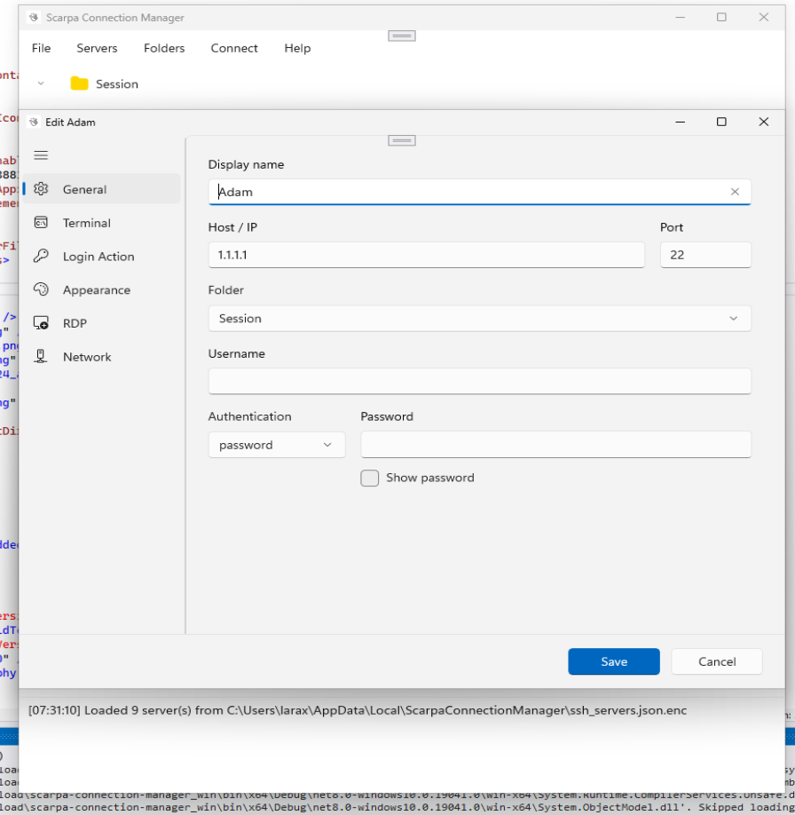
2. Terminal & Logging
The Terminal tab provides essential controls for session auditing, connection keep-alives, and automatic script execution.
- Session Logging: Enable session logging to capture your terminal output to a local file[cite: 6]. You can specify a precise
Log file pathand choose whether to Append to file or Overwrite file on subsequent connections[cite: 6]. - Append Data to Log: Inject custom telemetry or timestamps into your logs automatically. You can define specific text patterns and variables (such as
%Hfor Hostname or%Dfor Date) to be written at connect, at disconnect, or prepended to each line[cite: 6]. - Anti-idle (Keep-Alive): Prevent strict firewalls from dropping your session due to inactivity. You can instruct the terminal to send a standard string (like
\r) at a set interval, or check the Use NO-OP instead box[cite: 6]. Using NO-OP sends a silent Keep-Alive packet at the SSH protocol layer, ensuring your connection stays open without injecting unwanted characters into your visual command prompt. - Scrollback Buffer & Startup Scripts: Configure how many lines of terminal history are retained in memory (default is 10,000)[cite: 6]. Additionally, you can utilize the Startup Command File section to automatically send the contents of a local script file to the remote server immediately after a successful login[cite: 6].
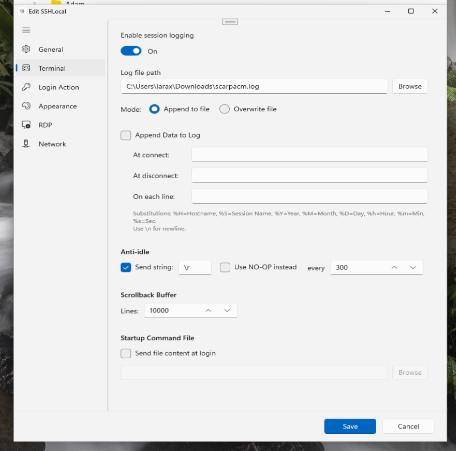
3. Terminal Customization (Appearance)
The Appearance tab grants you complete control over the visual presentation of your SSH terminal windows. Tailoring these settings can help reduce eye strain during long sessions or allow you to color-code critical production servers to prevent accidental commands.
- Color Scheme: Select from a list of pre-built, high-contrast themes (such as "Black on light yellow"). Choosing a scheme instantly overrides the custom color pickers below it.
- Text & Background Colors: Click the color blocks to open a custom picker, allowing you to define the exact hex values for your foreground and background terminal colors.
- Font & Size: Choose a monospaced font family (like Consolas) and adjust the font size to fit your monitor's resolution perfectly.
- Reset to Defaults: A quick recovery button that reverts all appearance settings back to the standard system defaults if your custom colors become difficult to read.
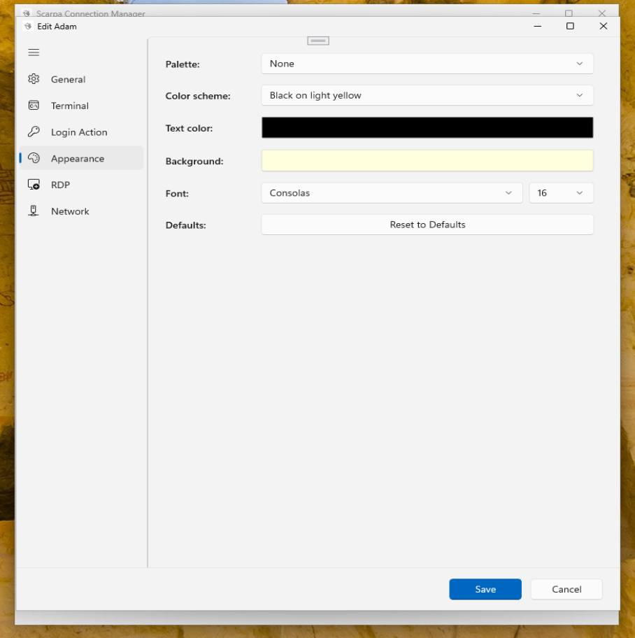
4. Automation & Login Actions
For complex environments involving jump servers, two-factor authentication prompts, or strict administrative routers, the Login Action tab acts as a powerful macro engine. Instead of manually typing repetitive login commands, you can instruct the terminal to execute them automatically.
The main window provides a sequence list where you can Add, Edit, Delete, or reorder (Move Up / Move Down) specific automation steps. The terminal will execute these steps sequentially from top to bottom upon successful connection.
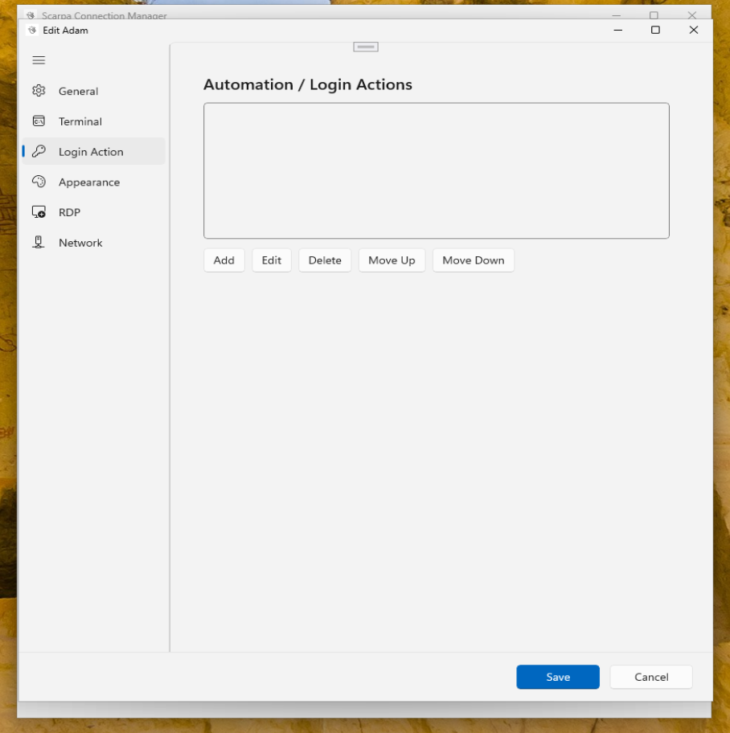
When you click Add to create a new sequence step, you are prompted to define an Expect/Send rule:
- Expect (Pattern to match): This is the exact text string the terminal will wait to see on the screen (e.g.,
Password:orVerification Code:). - Send (Response to send): The exact text the application will automatically inject and transmit once the expected pattern appears.
- Timeout (seconds): A safety mechanism. If the expected pattern does not appear within this time frame, the automation will gracefully abort rather than hanging the connection indefinitely.
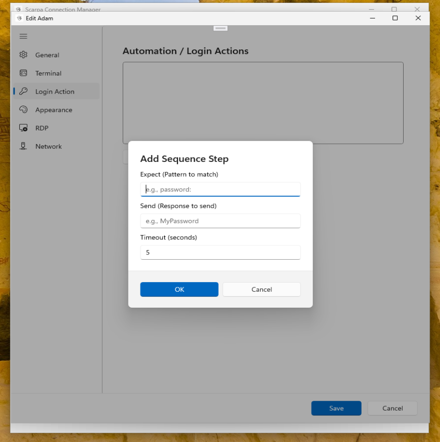
5. Network & Routing
The Network tab handles advanced routing scenarios. If the target server is isolated behind a strict corporate firewall, you can configure Jump Hosts. A Jump Host acts as an intermediary gateway; the application will silently connect to this gateway first, using the specified Host, Port, User, and Password, and then automatically bridge the connection to your final destination.
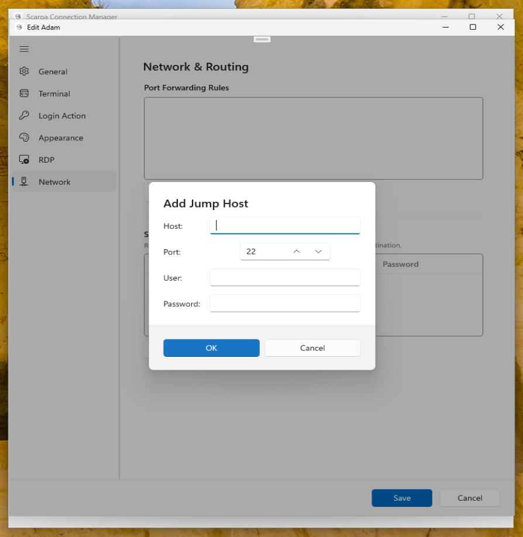
This tab is also where you configure Port Forwarding Rules, which allow you to securely tunnel local traffic through the SSH connection to remote internal networks.
- Rule Name: An optional label (like "Web UI" or "DB Tunnel") to help you remember what the tunnel is for.
- Type: Choose between a Local forward (opening a port on your machine) or a Remote forward.
- Source & Destination: Define the exact mapping. For example, setting the Source Port to
8080and the Destination tolocalhost:80means openinghttp://127.0.0.1:8080in your local web browser will securely display the remote server's internal website.
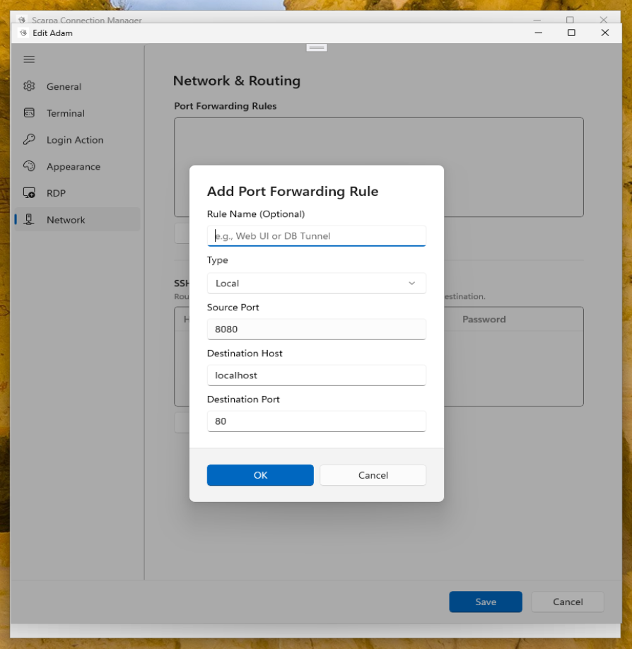
6. Remote Desktop (RDP)
Scarpa Connection Manager goes beyond command-line interfaces by offering full support for graphical Windows sessions. Under the RDP tab, you can flip the toggle switch to enable Remote Desktop capabilities for the selected session.
- Port & Resolution: The default RDP port is 3389, but this can be adjusted for non-standard deployments. You can also force a specific window resolution or allow it to launch directly into Full Screen mode.
- Integration Toggles: Use the checkboxes to customize the experience. You can choose to play the remote computer's audio locally, redirect your clipboard (allowing you to copy text on your PC and paste it into the remote server), and bypass strict certificate warnings often found on self-signed internal servers.
- Local Drive to Remote: A highly requested feature that allows you to seamlessly map a local directory (such as
C:\) directly into the remote Windows environment. This makes transferring large files or scripts as simple as dragging them between folders in the remote File Explorer.
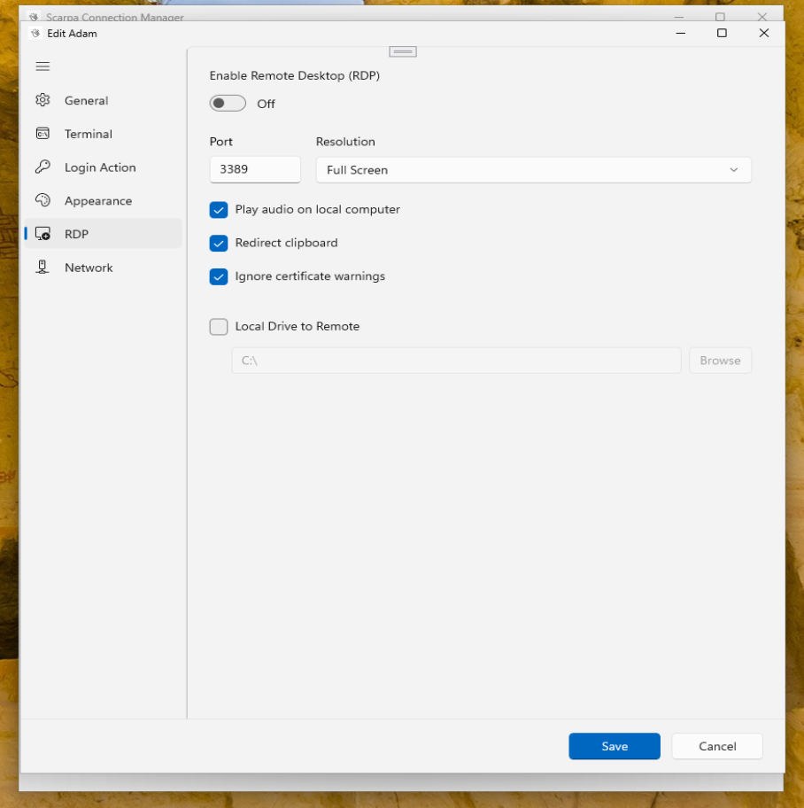
7. Android Device Manager
The integrated Android Device Manager provides a seamless way to view, control, and interact with physical Android devices right from your desktop. The main dashboard displays a list of all devices that are currently saved, authorized, or actively connected via USB or ADB over Wi-Fi. The Manual Refresh button quickly polls the system to detect newly plugged-in hardware.
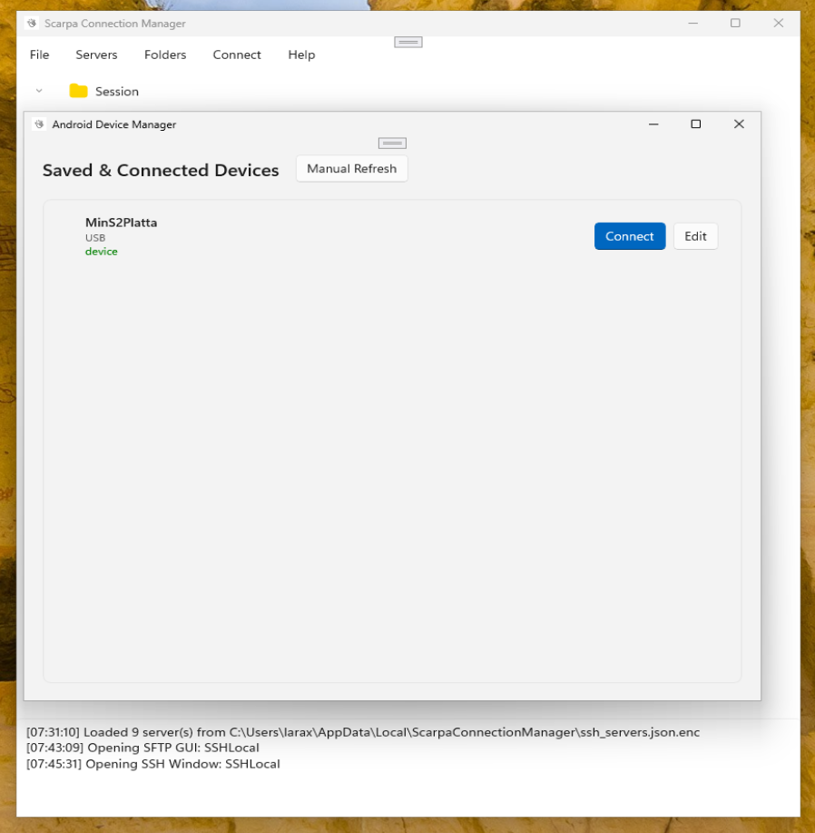
Clicking the Edit button next to a device opens the Device Settings pane, which is crucial for optimizing the mirroring performance based on your network conditions.
- Video Bitrate & Max Resolution: If you are experiencing lag over a wireless connection, lowering the bitrate or capping the maximum resolution will provide a smoother, lower-latency stream.
- Turn device screen off: A brilliant feature that blackens the physical screen of the phone or tablet while you are mirroring it, saving battery life and preventing OLED burn-in during long debugging sessions.
- Audio Relay & Wireless Setup: Check the box to route the Android device's native audio output directly to your PC speakers. The settings window also provides a dedicated button to initiate an untethered wireless connection setup.
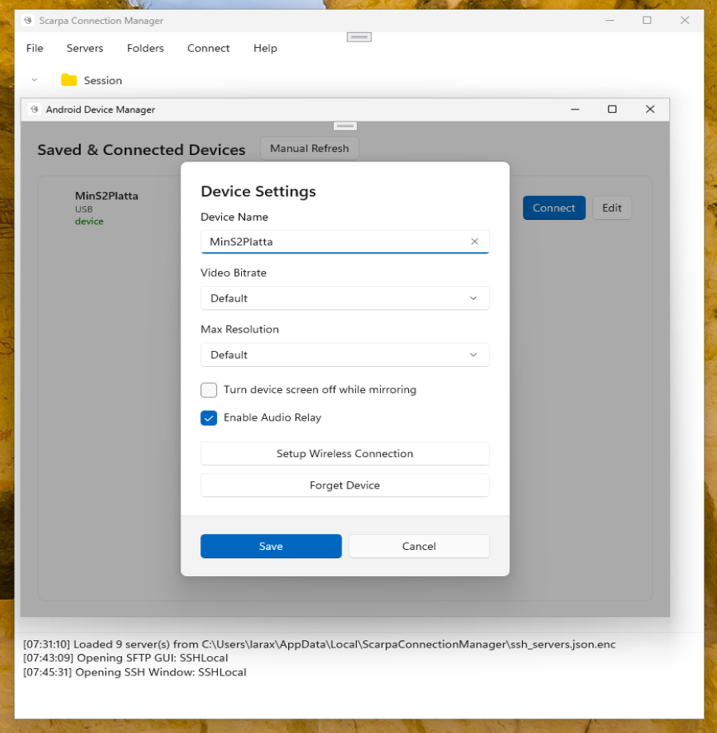
Once you click Connect, the application launches a dedicated, low-latency viewing window. This interactive session captures your local mouse clicks, scrolls, and keyboard inputs and instantly injects them into the Android operating system, allowing you to navigate the device exactly as if it were in your hands.
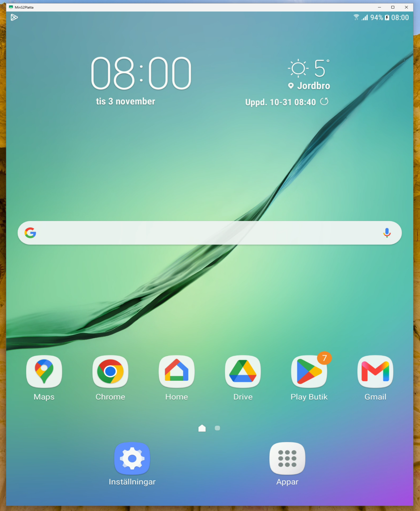
8. Security Architecture
Security is a foundational pillar of the Scarpa Connection Manager, engineered specifically to ensure your infrastructure credentials and workflows remain strictly protected against memory exposure and local disk exploitation.
- Memory and Storage Encryption: All sensitive credentials including passwords, Jump Host credentials, and SSH key passphrases are heavily encrypted. While the application is running, sensitive strings are managed exclusively using secure memory allocation mechanisms (
SecureString). This ensures passwords remain encrypted dynamically in RAM, only decrypting for the exact millisecond they are needed for network authentication, neutralizing the threat of memory dumps. - Anti-Tamper Script Verification: To protect against local exploits, any file linked to the Startup Command File functionality is cryptographically hashed when the configuration is saved. When the session starts, the application automatically verifies the current file hash against its internal secure record. If a malicious actor or malware alters the script file on your local disk outside of the application, Scarpa will detect the hash mismatch and instantly abort execution, keeping your remote servers safe from injected payloads.